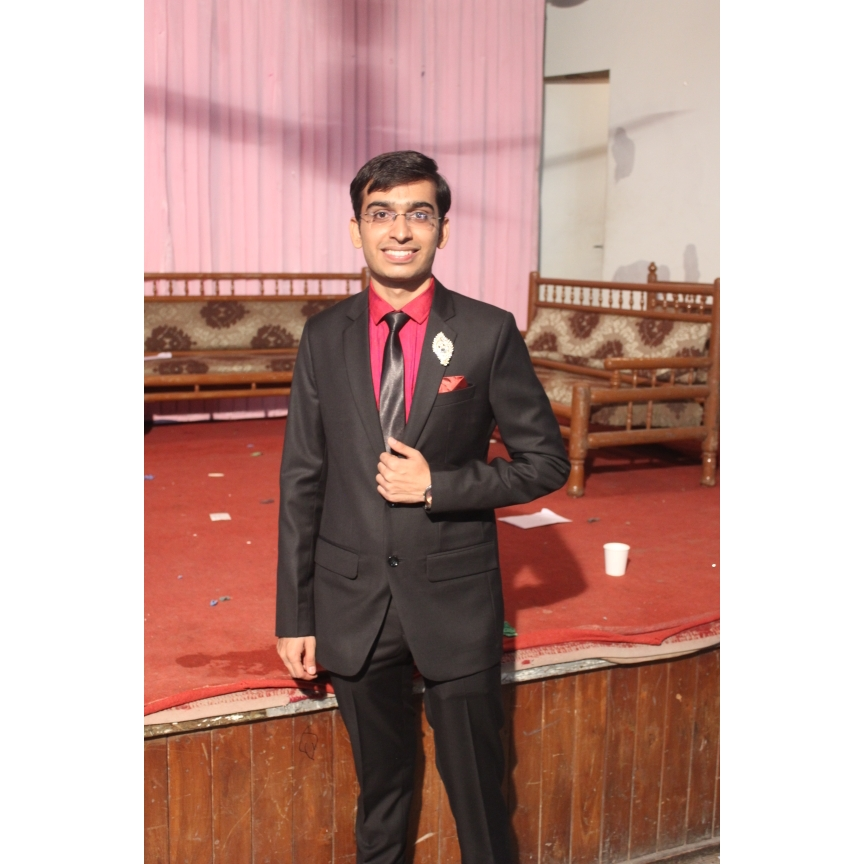

Ronak Hemant Baviskar
- Major : Masters in Information Systems
- University : New Jersey Institute of the Technology
- Course : Information Systems 601
- Project Contribution :
- Created a Layout Website Page
- Designed the following webpages :
- Index Page
- Timeline Page
- Future Page
- Learn the Basic HTML/CSS and Bootstrap Framework
- Integrated the Docker, GIT & Azure modules
- Career Goal : Aspiring Data Analytics,UI/UX Designer
- About : Recently graduated and accomplished Bachelors Degree in Information Technology from the Pune University.Currently, pursing
Masters in Information System from New Jersey Institute of the Technology.

Harsh Rajesh Damania
- Major : Masters in Business & Information Systems
- University : New Jersey Institute of the Technology
- Course : Information Systems 601
- Project Contribution :
- Created a Layout for the Home Page, along with designing the content for the webpage
- Designed the following webpages :
- Index Page
- Inventors Page
- Evolution Page
- Developers Page
- Integrated the Docker, GIT & Azure modules
- Learn the Basic HTML/CSS and Bootstrap Framework
- Career Goal : To excel and build the bridge between Technology and Business, and work as Business Analyst for the reputed firm
- About : Experienced Software Engineer with the demonstrated working history of working in the Information Technology and services industry.
Graduated from the University of the Mumbai and worked as Software Engineer for the Tata Consultancy Services.Currently, pursing Masters in Business & Information System from New Jersey Institute of the Technology.
Nikita Ramesh Gaikwad
- Major : Masters in Computer Science
- University : New Jersey Institute of the Technology
- Course : Information Systems 601
- Project Contribution :
- Designed the following webpages :
- Story
- Dot-com Bubble
- ICANN
- Learn the Basic HTML/CSS and Bootstrap Framework
- Integrated the Docker, GIT & Azure modules
- Career Goal : Software Developer
- About : Graduated and accomplished Bachelors Degree in Computer Engineering from the Ramrao Adik Institute of Technology.Currently, pursing Masters in Computer Science from New Jersey Institute of the Technology